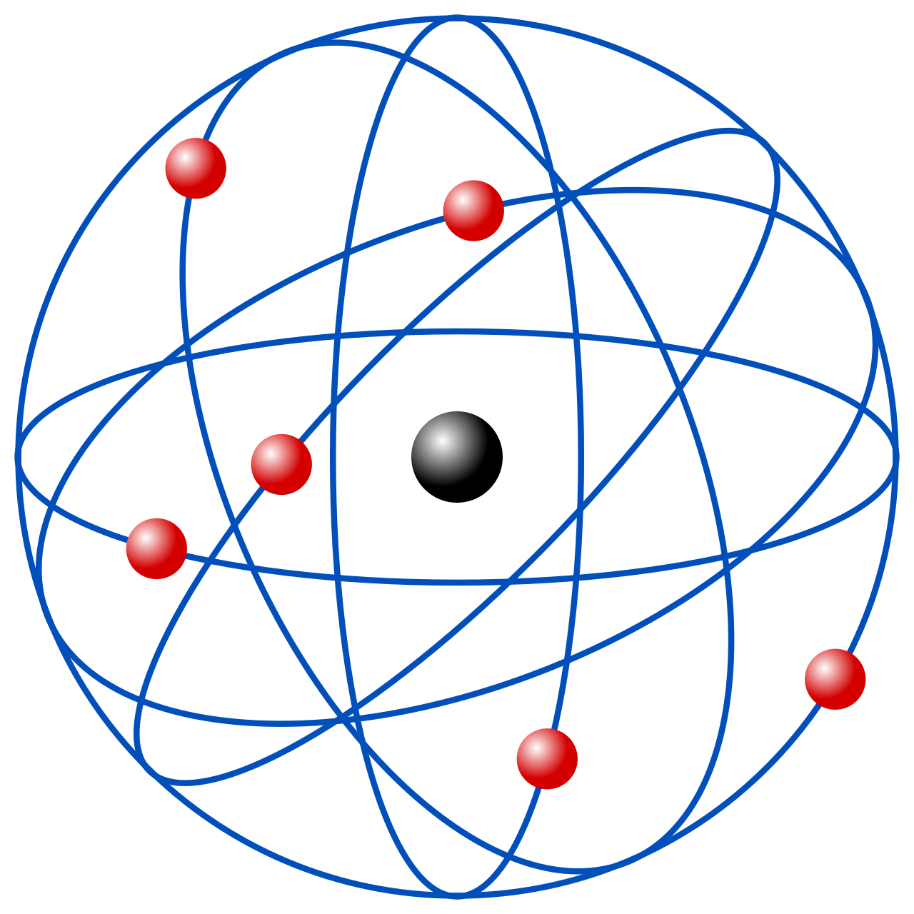

Modelos Atómicos
GRIEGOS
Demócrito y Leucipo propusieron que la materia está compuesta de partículas indivisibles llamadas átomos
Ideas basadas en que se debe llegar a un "limite" al dividir la materia
JOHN DALTON (1803)
La materia se constituye de partículas mínimas, indestructibles e indivisibles llamadas átomos.
Los átomos de un mismo elemento son siempre idénticos entre sí, con la misma masa y las mismas propiedades. En cambio, los átomos de elementos diferentes tienen masas y propiedades distintas.
Los átomos no se dividen ni pueden crearse ni destruirse durante las reacciones químicas.
Los átomos de elementos distintos pueden combinarse para formar compuestos en diferentes proporciones y cantidades.
Cuando se combinan para formar compuestos, los átomos se ordenan según relaciones simples, descriptas mediante números enteros.
John thomson (1897)
Modelo budín con pasas
El modelo atómico de Thomson (modelo "del pudín o pastel de pasas") es un modelo de estructura atómica propuesto en 1904 por Thomson, quien también había descubierto el electrón en 1897, pocos años antes del descubrimiento del protón y del neutrón. En el modelo, el átomo está compuesto por electrones de carga negativa en un átomo positivo, incrustados en este al igual que las pasas de un budín (o pudín). Por esta comparación, fue que el supuesto se denominó modelo del pudin de pasas.Postulaba que los electrones se distribuían uniformemente en el interior del átomo, suspendidos en una nube de carga positiva. El átomo se consideraba como una esfera con carga positiva con electrones repartidos como pequeños gránulos.

Ernest Rutherford (1911)
Modelo nuclear
Fue propuesto por el químico y físico británico-neozelandés Ernest Rutherford en 1911, para explicar los resultados de su «experimento de la lámina de oro».
Rutherford llegó a la conclusión de que la masa del átomo se concentraba en una región pequeña de cargas positivas que impedían el paso de las partículas alfa. Más tarde propuso un nuevo modelo atómico que poseía un núcleo o centro en el que el Modelo atómico de Thomson no pudo explicar cómo se mantiene la carga en los electrones dentro del átomo.
En él se concentra la masa y la carga positiva, y que en la zona extra nuclear se encuentran los electrones de carga negativa. Este modelo se suele llamar planetario y es el más conocido

Bohr-Plank
ÓRBITAS
Niels Bohr, un físico danés, propuso su modelo atómico en 1913, basado en el trabajo previo de Ernest Rutherford y las ideas de la cuantización de Max Planck. Su modelo describe el átomo de hidrógeno como un núcleo positivo (un protón) alrededor del cual gira un electrón en órbitas circulares. Bohr introdujo la idea de que los electrones solo pueden ocupar ciertas órbitas cuantizadas y que la energía se emite o absorbe únicamente cuando un electrón salta de una órbita a otra, lo que se conoce como niveles de energía
ERWIN SCHRÖDINGER (1926)
En 1926, Erwin Schrödinger desarrolló una ecuación que describe cómo cambia la función de onda de un sistema cuántico con el tiempo. Su enfoque, conocido como mecánica ondulatoria, complementó y, en muchos aspectos, reemplazó el modelo de Bohr, proporcionando una descripción más precisa de la naturaleza probabilística de los electrones en el átomo
Se considera la probabilidad de encontrar un electrón en un lugar determinado
establece la base de la mecánica cuántica